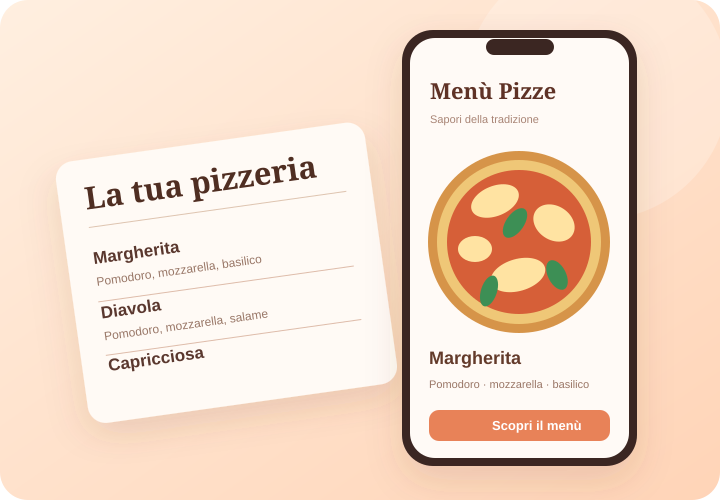

Identidad del local
Colores, estilo y presentación visual acordes con la propuesta gastronómica.
SOLUCIÓN 04 / GASTRONOMÍA
Diseñamos menús digitales que reflejan el estilo de cada local y permiten consultar platos, ingredientes y precios desde el teléfono.

Visualización conceptual · Abrir menú de pizzería ↗EL SERVICIO
El punto de partida es la oferta gastronómica del negocio. La organizamos en un menú digital con diseño propio para facilitar la consulta desde diferentes dispositivos.
Colores, estilo y presentación visual acordes con la propuesta gastronómica.
Platos, ingredientes y precios accesibles mediante enlace o código QR.
El menú puede actualizarse según el procedimiento de mantenimiento que se acuerde.
UN DISEÑO PARA CADA NEGOCIO
La demostración actual utiliza el menú de una pizzería, pero el formato puede adaptarse a otras ofertas gastronómicas.
En una página de concepto anterior también se muestran estilos pensados para distintas categorías de locales.
Ver ejemplos disponiblesSOLUCIÓN EN ACCIÓN
Primero, el menú digital de una pizzería. Después, una presentación conceptual anterior orientada a negocios gastronómicos.
Los ejemplos se abren en sitios externos. El menú de pizzería es una muestra de diseño.
SIGUIENTE PASO
Contanos qué información necesitás digitalizar y conversemos sobre una solución adaptada a tu caso.